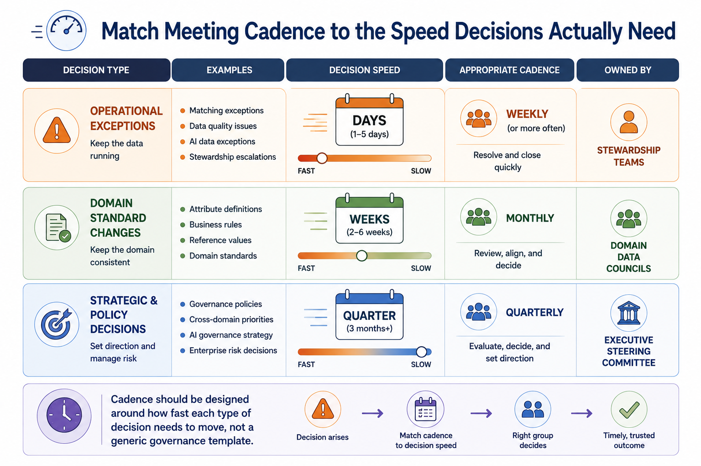
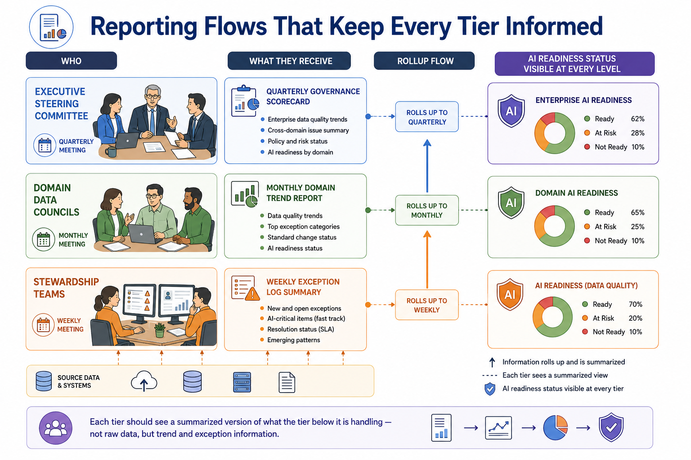
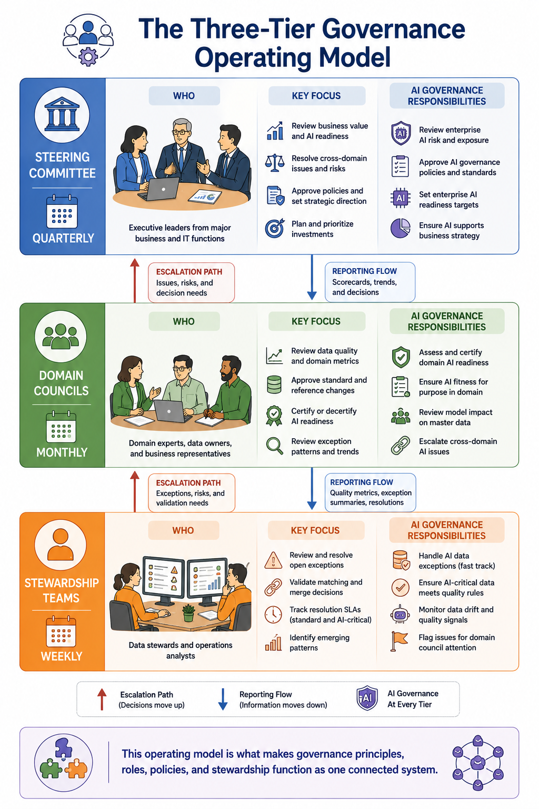

Governance Operating Models
Module support notes
Designing Meeting Cadence Around Decision Speed
A common mistake in operating model design is applying a single meeting cadence to every kind of governance decision. Operational data quality exceptions need resolution measured in days — which is why stewardship meets weekly and often acts between meetings entirely. Domain-level standard changes can responsibly take weeks, aligning with a monthly council cadence. Strategic decisions — including major policy or architecture choices — can take a quarter without harming the business.
Trying to force strategic decisions into a faster cadence usually produces rushed, poorly consulted decisions. And trying to handle operational exceptions at a monthly cadence means AI certification queues back up for weeks while routine data quality issues wait for a meeting that hasn't happened yet.
- Stewardship teams — weekly cadence or faster; operational exceptions that affect AI pipelines may require same-day resolution
- Domain councils — monthly cadence; standard changes, cross-domain conflicts, and domain quality trend reviews
- Steering committee — quarterly cadence; strategic direction, policy decisions, AI governance program health, and executive reporting
Tip
Design cadence around how fast each type of decision actually needs to move — not a generic governance template. The most efficient operating models include clear decision routing rules that tell stewards and domain owners which tier handles which type of issue, so time-sensitive decisions never get queued behind a monthly meeting when they need a daily resolution.

Reporting That Connects the Tiers
The three-tier operating model only functions well when information flows upward in a digestible form. Stewardship teams generate detailed exception logs; domain councils need a summarized trend view of those logs, not the raw data; the steering committee needs a further summarized scorecard showing business value and AI readiness trends, not domain-level detail.
Designing this reporting rollup deliberately — rather than expecting each tier to extract what they need from the tier below's raw data — is what keeps the operating model efficient as the organization scales. Each tier should see a summarized version of what the tier below it is handling, with escalations surfaced and trends highlighted rather than raw exception counts.
Note
AI readiness status should be visible at every level of the reporting rollup — not just in the steering committee scorecard. Stewardship teams should see which open exceptions are blocking AI certification. Domain councils should see AI readiness trends for their domain. The steering committee should see AI program health alongside overall governance health. This visibility ensures that AI readiness gaps are escalated at the right speed rather than buried in operational reporting.

The operating model is what makes every other governance discipline — principles, roles, policies, and stewardship — function as one connected system rather than a collection of separate artifacts.
